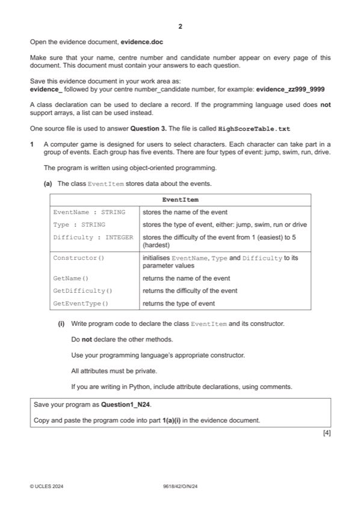

Question 1

Original paper page 2
Part 1(a)(i) — solution
- Class EventItem header (and end where appropriate)
- 3 private attributes with suitable data types
- Constructor header (and end where appropriate) with 3 (min) parameters within class declaration …
- … assigning parameters to attributes within constructor
Visual Basic (VB.NET)
Class EventItem
Private EventName As String
Private EventType As String
Private Difficulty As Integer
Sub New(pName, pType, pDifficulty)
EventName = pName
EventType = pType
Difficulty = pDifficulty
End Sub
End Class
University Press & Assessment 2024 Page 4 of 39
9618/42 Cambridge International AS & A Level – Mark Scheme October/November 2024
Python
class EventItem():
def __init__(self, pName, pType, pDifficulty):
self.__EventName = pName #String
self.__EventType = pType #String
self.__Difficulty = pDifficulty #Integer
Mark points
- Class EventItem header (and end where appropriate)
- 3 private attributes with suitable data types
- Constructor header (and end where appropriate) with 3 (min) parameters within class declaration …
- … assigning parameters to attributes within constructor
Part 1(a)(i) — solution
Mark points
- Include the ideas shown in the solution above.
Part 1(a)(ii) — solution
- 1 get method with no parameter …
- … return correct attribute (without changing)
- Remaining 2 correct get methods returning the attributes
Python
def GetName(self):
return self.__EventName
def GetEventType(self):
return self.__EventType
def GetDifficulty(self):
return self.__Difficulty
University Press & Assessment 2024 Page 5 of 39
9618/42 Cambridge International AS & A Level – Mark Scheme October/November 2024
Mark points
- 1 get method with no parameter …
- … return correct attribute (without changing)
- Remaining 2 correct get methods returning the attributes
Part 1(a)(ii) — solution
VB.NET
Function GetName()
Return EventName
End Function
Function GetEventType()
Return EventType
End Function
Function GetDifficulty()
Return Difficulty
End Function
Visual Basic (VB.NET)
Function GetName()
Return EventName
End Function
Function GetEventType()
Return EventType
End Function
Function GetDifficulty()
Return Difficulty
End Function
Mark points
- Include the ideas shown in the solution above.
Part 1(b)(i) — solution
- 1D array name Group with (min 5 elements and of type EventItem)
Visual Basic (VB.NET)
Dim Group(4) As EventItem
Python
Group = [] #type Event, 5 spaces
Mark points
- 1D array name Group with (min 5 elements and of type EventItem)
Part 1(b)(ii) — solution
- Any 1 instance of EventItem declared with values passed in correct order …
- … stored in the array Group …
- … remaining 4 correctly instantiated and stored in Group
Visual Basic (VB.NET)
Group(0) = New EventItem("Bridge", "jump", 3)
Group(1) = New EventItem("Water wade", "swim", 4)
Group(2) = New EventItem("100 mile run", "run", 5)
Group(3) = New EventItem("Gridlock", "drive", 2)
Group(4) = New EventItem("Wall on wall", "jump", 4)
Python
Group.append(EventItem("Bridge", "jump", 3))
Group.append(EventItem("Water wade", "swim", 4))
Group.append(EventItem("100 mile run", "run", 5))
Group.append(EventItem("Gridlock", "drive", 2))
Group.append(EventItem("Wall on wall", "jump", 4))
Mark points
- Any 1 instance of EventItem declared with values passed in correct order …
- … stored in the array Group …
- … remaining 4 correctly instantiated and stored in Group
Part 1(c) — solution
- Class Character declared (and end where appropriate)
- 5 private attributes with correct data types
- Constructor header (and end) taking (min) 5 parameters and parameters assigned to attributes
- Get method (with no parameter) returning name attribute
Mark points
- Class Character declared (and end where appropriate)
- 5 private attributes with correct data types
- Constructor header (and end) taking (min) 5 parameters and parameters assigned to attributes
- Get method (with no parameter) returning name attribute
Part 1(c) — solution
- self.__CName = pName #string
- self.__Jump = pJump #integer chance of success
- self.__Swim = pSwim #integer chance of success
- self.__Run = pRun #integer chance of success
- self.__Drive = pDrive #integer chance of success
- CName = pName
- Jump = pJump
- Swim = pSwim
- Run = pRun
- Drive = pDrive
Visual Basic (VB.NET)
Class Character
Private CName As String
Private Jump As Integer
Private Swim As Integer
Private Run As Integer
Private Drive As Integer
Sub New(pName, pJump, pSwim, pRun, pDrive)
CName = pName
Jump = pJump
Swim = pSwim
Run = pRun
Drive = pDrive
End Sub
Function GetName()
Return CName
End Function
End Class
University Press & Assessment 2024 Page 8 of 39
9618/42 Cambridge International AS & A Level – Mark Scheme October/November 2024
Python
class Character():
def __init__(self, pName, pJump, pSwim, pRun, pDrive):
self.__CName = pName #string
self.__Jump = pJump #integer chance of success
self.__Swim = pSwim #integer chance of success
self.__Run = pRun #integer chance of success
self.__Drive = pDrive #integer chance of success
def GetName(self):
return self.__CName #STRING
Mark points
- self.__CName = pName #string
- self.__Jump = pJump #integer chance of success
- self.__Swim = pSwim #integer chance of success
- self.__Run = pRun #integer chance of success
- self.__Drive = pDrive #integer chance of success
- CName = pName
- Jump = pJump
- Swim = pSwim
- Run = pRun
- Drive = pDrive
Part 1(c) — solution
Mark points
- Include the ideas shown in the solution above.
Part 1(d) — solution
- Method header CalculateScore (and end where appropriate) taking (min) 2 parameters
- Selection on the type of event using the parameter
- … if skill value is = difficulty return 100
- …otherwise subtracting skill value from the difficulty and return correct value 80 (diff 1), 60 (diff 2), 40 (diff 3) and 20
- Using the correct attributes and parameters throughout
Mark points
- Method header CalculateScore (and end where appropriate) taking (min) 2 parameters
- Selection on the type of event using the parameter
- … if skill value is = difficulty return 100
- …otherwise subtracting skill value from the difficulty and return correct value 80 (diff 1), 60 (diff 2), 40 (diff 3) and 20
- Using the correct attributes and parameters throughout
Part 1(d) — solution
- if Type == "jump":
- Chance = self.__Jump
- elif Type == "swim":
- Chance = self.__Swim
- elif Type == "run":
- Chance = self.__Run
- Chance = self.__Drive
- if Chance >= Difficulty:
- Difference = Difficulty - Chance
- if Difference == 1:
- elif Difference == 2:
- elif Difference == 3:
- elif Difference == 4:
Python
def CalculateScore(self, Type, Difficulty):
if Type == "jump":
Chance = self.__Jump
elif Type == "swim":
Chance = self.__Swim
elif Type == "run":
Chance = self.__Run
else:
Chance = self.__Drive
if Chance >= Difficulty:
return 100
else:
Difference = Difficulty - Chance
if Difference == 1:
return 80
elif Difference == 2:
return 60
elif Difference == 3:
return 40
elif Difference == 4:
return 20
else:
return 0
University Press & Assessment 2024 Page 10 of 39
9618/42 Cambridge International AS & A Level – Mark Scheme October/November 2024
Mark points
- if Type == "jump":
- Chance = self.__Jump
- elif Type == "swim":
- Chance = self.__Swim
- elif Type == "run":
- Chance = self.__Run
- Chance = self.__Drive
- if Chance >= Difficulty:
- Difference = Difficulty - Chance
- if Difference == 1:
- elif Difference == 2:
- elif Difference == 3:
- elif Difference == 4:
Part 1(d) — solution
- If Type = "jump" Then
- Chance = Jump
- ElseIf Type = "swim" Then
- Chance = Swim
- ElseIf Type = "run" Then
- Chance = Run
- Chance = Drive
- If Chance >= Difficulty Then
- Difference = Difficulty - Chance
- If Difference = 1 Then
- ElseIf Difference = 2 Then
- ElseIf Difference = 3 Then
- ElseIf Difference = 4 Then
Visual Basic (VB.NET)
Function CalculateScore(Type, Difficulty)
Dim Chance As Integer
Dim Difference As Integer
If Type = "jump" Then
Chance = Jump
ElseIf Type = "swim" Then
Chance = Swim
ElseIf Type = "run" Then
Chance = Run
Else
Chance = Drive
End If
If Chance >= Difficulty Then
Return 100
Else
Difference = Difficulty - Chance
If Difference = 1 Then
Return 80
ElseIf Difference = 2 Then
Return 60
ElseIf Difference = 3 Then
Return 40
ElseIf Difference = 4 Then
Return 20
Else
Return 0
End If
End If
End Function
University Press & Assessment 2024 Page 11 of 39
9618/42 Cambridge International AS & A Level – Mark Scheme October/November 2024
Mark points
- If Type = "jump" Then
- Chance = Jump
- ElseIf Type = "swim" Then
- Chance = Swim
- ElseIf Type = "run" Then
- Chance = Run
- Chance = Drive
- If Chance >= Difficulty Then
- Difference = Difficulty - Chance
- If Difference = 1 Then
- ElseIf Difference = 2 Then
- ElseIf Difference = 3 Then
- ElseIf Difference = 4 Then
Part 1(d) — solution
Mark points
- Include the ideas shown in the solution above.
Part 1(e)(i) — solution
- Creating one new instance of Character with correct name and values for 1 character and storing
- 2nd correct instance of Character and storing
Visual Basic (VB.NET)
Dim P1 As Character = New Character("Tarz", 5, 3, 5, 1)
Dim P2 As Character = New Character("Geni", 2, 2, 3, 4)
Python
P1 = Character("Tarz", 5, 3, 5, 1)
P2 = Character("Geni", 2, 2, 3, 4)
Mark points
- Creating one new instance of Character with correct name and values for 1 character and storing
- 2nd correct instance of Character and storing
Part 1(e)(ii) — solution
- Looping through each event in Group (or checking each of the 5 events manually)
- Using CalculateScore() for each Character object with parameters of type and difficulty
- …comparing the return values from the two function calls …
- …incrementing points for winning player and outputting their name and message stating they have won for each
- …outputting message if it's a draw
- Comparing the total points for each character after all events checked and outputting name of player with most points
- Using get methods correctly throughout
Mark points
- Looping through each event in Group (or checking each of the 5 events manually)
- Using CalculateScore() for each Character object with parameters of type and difficulty
- …comparing the return values from the two function calls …
- …incrementing points for winning player and outputting their name and message stating they have won for each
- …outputting message if it's a draw
- Comparing the total points for each character after all events checked and outputting name of player with most points
- Using get methods correctly throughout
Part 1(e)(ii) — solution
- P1Points = 0
- P2Points = 0
- P1EventScore = P1.CalculateScore(Group[x].GetEventType(), Group[x].GetDifficulty())
- P2EventScore = P2.CalculateScore(Group[x].GetEventType(), Group[x].GetDifficulty())
- P1Points = P1Points + 1
- P2Points = P2Points + 1
Python
P1Points = 0
P2Points = 0
for x in range(0, 5):
P1EventScore = P1.CalculateScore(Group[x].GetEventType(), Group[x].GetDifficulty())
P2EventScore = P2.CalculateScore(Group[x].GetEventType(), Group[x].GetDifficulty())
if P1EventScore > P2EventScore:
P1Points = P1Points + 1
print(P1.GetName(), "you win this event")
elif P2EventScore > P1EventScore:
P2Points = P2Points + 1
print(P2.GetName(), "you win this event")
else:
print("This event is a draw")
if P1Points > P2Points:
print(P1.GetName(), "you have won with", P1Points)
elif P2Points> P1Points:
print(P2.GetName(), "you have won with", P2Points)
else:
print("It's a draw")
University Press & Assessment 2024 Page 14 of 39
9618/42 Cambridge International AS & A Level – Mark Scheme October/November 2024
Mark points
- P1Points = 0
- P2Points = 0
- P1EventScore = P1.CalculateScore(Group[x].GetEventType(), Group[x].GetDifficulty())
- P2EventScore = P2.CalculateScore(Group[x].GetEventType(), Group[x].GetDifficulty())
- P1Points = P1Points + 1
- P2Points = P2Points + 1
Part 1(e)(ii) — solution
- Dim P1 As Character = New Character("Tarz", 5, 3, 5, 1)
- Dim P2 As Character = New Character("Geni", 2, 2, 3, 4)
- Dim P1Points As Integer = 0
- Dim P2Points As Integer = 0
- Dim P1EventScore As Integer = 0
- Dim P2EventScore As Integer = 0
- For x = 0 To 4
- P1EventScore = P1.CalculateScore(Group(x).GetEventType(), Group(x).GetDifficulty())
- P2EventScore = P2.CalculateScore(Group(x).GetEventType(), Group(x).GetDifficulty())
- P1Points = P1Points + 1
- P2Points = P2Points + 1
Visual Basic (VB.NET)
Dim P1 As Character = New Character("Tarz", 5, 3, 5, 1)
Dim P2 As Character = New Character("Geni", 2, 2, 3, 4)
Dim P1Points As Integer = 0
Dim P2Points As Integer = 0
Dim P1EventScore As Integer = 0
Dim P2EventScore As Integer = 0
For x = 0 To 4
P1EventScore = P1.CalculateScore(Group(x).GetEventType(), Group(x).GetDifficulty())
P2EventScore = P2.CalculateScore(Group(x).GetEventType(), Group(x).GetDifficulty())
If P1EventScore > P2EventScore Then
P1Points = P1Points + 1
Console.WriteLine(P1.GetName() & " you win this event")
ElseIf P2EventScore > P1EventScore Then
P2Points = P2Points + 1
Console.WriteLine(P2.GetName() & " you win this event")
Else
Console.WriteLine("This event is a draw")
End If
Next x
If P1Points > P2Points Then
Console.WriteLine(P1.GetName() & " you have won with " & P1Points)
ElseIf P2Points > P1Points Then
Console.WriteLine(P2.GetName() & " you have won with " & P2Points)
Else
Console.WriteLine("It's a draw")
End If
University Press & Assessment 2024 Page 15 of 39
9618/42 Cambridge International AS & A Level – Mark Scheme October/November 2024
Mark points
- Dim P1 As Character = New Character("Tarz", 5, 3, 5, 1)
- Dim P2 As Character = New Character("Geni", 2, 2, 3, 4)
- Dim P1Points As Integer = 0
- Dim P2Points As Integer = 0
- Dim P1EventScore As Integer = 0
- Dim P2EventScore As Integer = 0
- For x = 0 To 4
- P1EventScore = P1.CalculateScore(Group(x).GetEventType(), Group(x).GetDifficulty())
- P2EventScore = P2.CalculateScore(Group(x).GetEventType(), Group(x).GetDifficulty())
- P1Points = P1Points + 1
- P2Points = P2Points + 1
Part 1(e)(ii) — solution
Mark points
- Include the ideas shown in the solution above.
Part 1(e)(iii) — solution
1 mark for output showing the correct winner for each event, the final winner’s name (and their points) 1
e.g.
University Press & Assessment 2024 Page 17 of 39
9618/42 Cambridge International AS & A Level – Mark Scheme October/November 2024
Mark points
- Include the ideas shown in the solution above.
Part 1 — solution
mark for correct values returned in correct places
Mark points
- Include the ideas shown in the solution above.
Part 1 — solution
- IF AQueue.HeadPointer = -1 THEN
Mark points
- IF AQueue.HeadPointer = -1 THEN